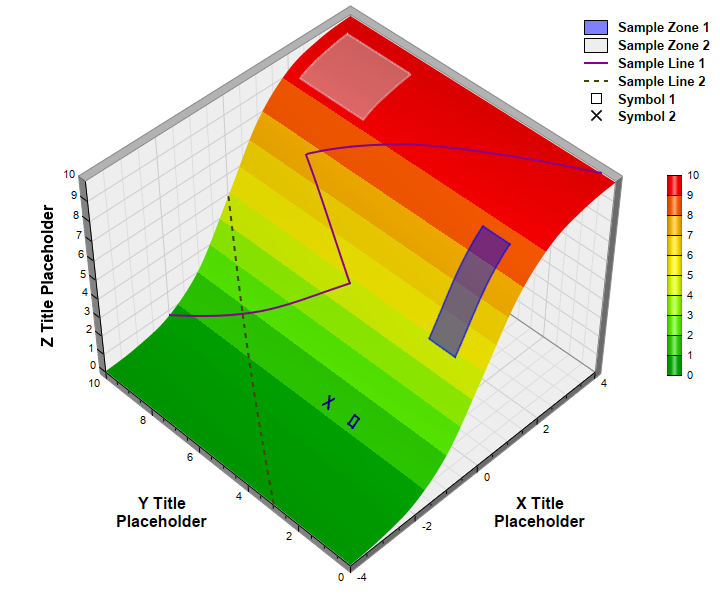

This examples demonstrates adding custom lines and zones on a surface chart.
Surface lines and zones are useful for marking regions or boundaries on the surface chart. In this example, surface lines are added using
SurfaceChart.addSurfaceLine and
SurfaceChart.addSurfaceLine2, and surface zones are added using
SurfaceChart.addSurfaceZone. Semi-transparent colors are used so that the zones will not block the underlying surface. The "X" icon is added by adding two short surface lines, and the square icon is added by adding a small transparent zone with black border.
The following is the command line version of the code in "cppdemo/surfacelinezone". The MFC version of the code is in "mfcdemo/mfcdemo". The Qt Widgets version of the code is in "qtdemo/qtdemo". The QML/Qt Quick version of the code is in "qmldemo/qmldemo".
#include "chartdir.h"
#include <math.h>
int main(int argc, char *argv[])
{
// The x and y coordinates of the grid
double dataX[] = {-4, -3, -2, -1, 0, 1, 2, 3, 4};
const int dataX_size = (int)(sizeof(dataX)/sizeof(*dataX));
double dataY[] = {0, 1, 2, 3, 4, 5, 6, 7, 8, 9, 10};
const int dataY_size = (int)(sizeof(dataY)/sizeof(*dataY));
// The values at the grid points. In this example, we will compute the values using the formula
// z = 20 / (1 + 1 / (1 + 3.5 ** (x + 0.5))) - 10.
const int dataZ_size = dataX_size * dataY_size;
double dataZ[dataZ_size];
for(int yIndex = 0; yIndex < dataY_size; ++yIndex) {
for(int xIndex = 0; xIndex < dataX_size; ++xIndex) {
dataZ[yIndex * dataX_size + xIndex] = 20 / (1 + 1 / (1 + pow(3.5, dataX[xIndex] + 0.5)))
- 10;
}
}
// Create a SurfaceChart object of size 720 x 600 pixels
SurfaceChart* c = new SurfaceChart(720, 600);
// Set the center of the plot region at (350, 280), and set width x depth x height to 360 x 360
// x 270 pixels
c->setPlotRegion(350, 280, 360, 360, 270);
// Set the data to use to plot the chart
c->setData(DoubleArray(dataX, dataX_size), DoubleArray(dataY, dataY_size), DoubleArray(dataZ,
dataZ_size));
// Spline interpolate data to a 80 x 80 grid for a smooth surface
c->setInterpolation(80, 80);
// Set the elevation and rotation angles to 30 and 315 degrees
c->setViewAngle(45, 315);
// Add a color axis (the legend) 20 pixels from the right border. Set the length to 200 pixels
// and the labels on the right side.
ColorAxis* cAxis = c->setColorAxis(c->getWidth() - 20, 275, Chart::Right, 200, Chart::Right);
// The color gradient used for the color axis
int colorGradient[] = {0x00aa00, 0x66ff00, 0xffff00, 0xffcc00, 0xff0000};
const int colorGradient_size = (int)(sizeof(colorGradient)/sizeof(*colorGradient));
cAxis->setColorGradient(false, IntArray(colorGradient, colorGradient_size));
// Add a semi-transparent blue (0x7f0000ff) rectangular surface zone with opposite corners at
// (0, 1) and (1.6, 2)
c->addSurfaceZone(0, 1, 1.6, 2, 0x7f0000ff, 0x7f0000ff, 2);
// Add a semi-transparent grey (0x7fdddddd) rectangular surface zone with opposite corners at
// (2, 7) and (3.5, 9.5)
c->addSurfaceZone(2, 7, 3.5, 9.5, 0x7fdddddd, 0x7fdddddd, 2);
// Add a surface line from (-4, 3) to (0, 10). Use brown (0x444400) dash line with a line width
// of 2 pixels.
c->addSurfaceLine(-4, 3, 0, 10, c->dashLineColor(0x444400), 2);
// Add a surface line from (-2, 10) to (0, 5) to (1, 8) to (4, 0.5). Use purple color with a
// line width of 2 pixels.
double lineX[] = {-2, 0, 1, 4};
const int lineX_size = (int)(sizeof(lineX)/sizeof(*lineX));
double lineY[] = {10, 5, 8, 0.5};
const int lineY_size = (int)(sizeof(lineY)/sizeof(*lineY));
c->addSurfaceLine(DoubleArray(lineX, lineX_size), DoubleArray(lineY, lineY_size), 0x880088, 2);
// Add two surface lins to create a X symbol.
c->addSurfaceLine(-1.4, 3.9, -1.6, 4.1, 0x000088, 2);
c->addSurfaceLine(-1.6, 3.9, -1.4, 4.1, 0x000088, 2);
// Add a small surface zone with transparent fill color and a 2-pixel border to create a square
// symbol.
c->addSurfaceZone(-1.4, 2.9, -1.6, 3.1, Chart::Transparent, 0x000088, 2);
// Add a legend box align to the right edge of the chart. Use 10pt Arial Bold font. Set the
// background and border to transparent.
LegendBox* b = c->addLegend(c->getWidth() - 1, 10, true, "Arial Bold", 10);
b->setAlignment(Chart::TopRight);
b->setBackground(Chart::Transparent, Chart::Transparent);
// Set the legend icon size to 24 x 15 pixels. Set a gap of 10 pixels between the icon and the
// text.
b->setKeySize(24, 15, 10);
// Add legend entries for the zones, lines and symbols
b->addKey("Sample Zone 1", 0x7f0000ff);
b->addKey("Sample Zone 2", 0x7fdddddd);
b->addKey("Sample Line 1", 0x880088, 2);
b->addKey("Sample Line 2", c->dashLineColor(0x444400), 2);
b->addText(
"<*block,width=24,halign=center*><*img=@Square,width=11,edgeColor=000000*><*/*>"
"<*advance=10*>Symbol 1");
b->addText(
"<*block,width=24,halign=center*><*img=@Cross2(0.1),width=11,color=000000*><*/*>"
"<*advance=10*>Symbol 2");
// Set the x, y and z axis titles using 12pt Arial Bold font
c->xAxis()->setTitle("X Title<*br*>Placeholder", "Arial Bold", 12);
c->yAxis()->setTitle("Y Title<*br*>Placeholder", "Arial Bold", 12);
c->zAxis()->setTitle("Z Title Placeholder", "Arial Bold", 12);
// Output the chart
c->makeChart("surfacelinezone.png");
//free up resources
delete c;
return 0;
}
© 2023 Advanced Software Engineering Limited. All rights reserved.